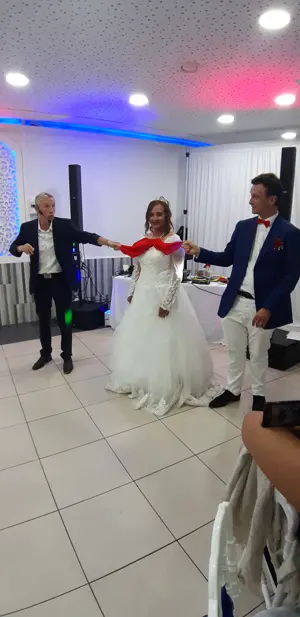
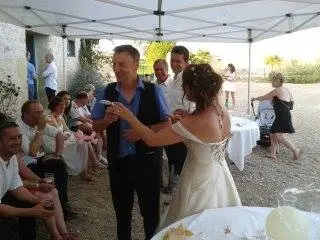
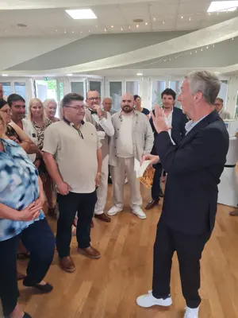
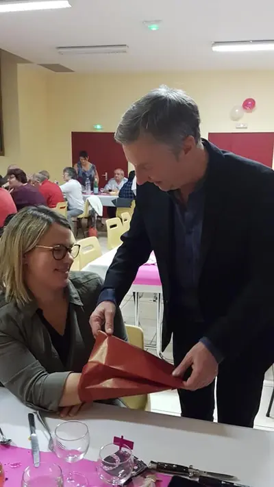
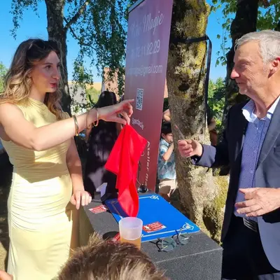

La magie au milieu de vos invités
En bref1 h à 2 h de close-upDe 20 à 300 invitésAucune installation ni sonoDéplacement inclus Indre et Cher
Francis pratique le close-up : la magie se passe à quelques centimètres des invités, avec des cartes, des pièces et souvent leurs propres objets. Une alliance, une pièce ou une montre empruntée, et tout se passe entre leurs mains.
C'est l'animation idéale du vin d'honneur ou du cocktail : elle brise la glace entre les invités et crée des moments de complicité qu'ils racontent encore le soir. Francis s'adapte à tous les lieux : salle de réception, jardin, château, restaurant ou terrasse.
La formule la plus demandée
- Le cocktail : close-up de groupe en groupe, en déambulation
- Le repas : un petit spectacle qui conquiert petits et grands
- Les enfants : sculpture sur ballons, chacun repart avec sa création
Francis vous propose la combinaison qui colle à votre programme, et la durée s'adapte au nombre d'invités.
« Bluffant ! Rencontré lors d'une prestation sur un mariage, nous avons été bluffés par ses talents de magicien. Les tours de magie se font avec humour et bonne humeur. Je recommande pour animer vos soirées ou vos événements. »
— Mélanie Foucher, avis Google
« La famille, les amis et une jolie touche de magie (et d'humour) tout au long de la soirée. Sculptures de ballons pour les enfants, close-up pendant le repas et petit spectacle qui a conquis petits et grands. Un immense merci ! »
— Avis Google
Questions fréquentes sur la magie de mariage
À quel moment du mariage faire venir le magicien ?
Le vin d'honneur ou le cocktail est le moment idéal : les invités sont debout, se mélangent, et la magie crée les premiers échanges. Francis peut ensuite enchaîner avec un spectacle pendant le repas.
Combien de temps dure la prestation ?
En général entre 1 h et 2 h de close-up, selon le nombre d'invités et le déroulement de votre journée.
Faut-il prévoir une scène ou une sonorisation ?
Non pour le close-up : Francis travaille directement parmi vos invités, sans installation. Pour un spectacle pendant le repas, il apporte sa propre sonorisation.
Francis se déplace-t-il pour un mariage en château ?
Oui. Il intervient dans l'Indre et le Cher (déplacement inclus) et jusqu'à Tours, Blois et Orléans pour les mariages en château et les grandes réceptions. Voir la zone d'intervention.
Comment réserver ma date ?
Appelez Francis au 06 72 11 82 29 ou écrivez-lui depuis le formulaire de contact avec la date, le lieu et le nombre d'invités. Il vous répond personnellement avec un devis gratuit sous 24 heures.
Mariages en images
Cliquez sur une photo pour l'agrandir.






Autres prestations
Votre date est-elle encore libre ?
Parlez-en à Francis : il vous répond personnellement et établit un devis gratuit sous 24 heures.
Issoudun · Châteauroux · Bourges · Vierzon · Tours · Blois